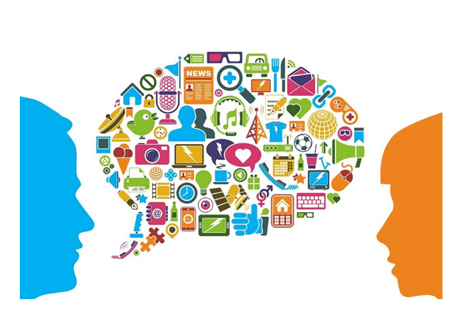

CARGA HORÁRIA ANUAL: 200 HORAS.
No terceiro ano do Ensino Médio Técnico, a área de Linguagens e suas tecnologias visa a formação voltada ao desenvolvimento total da autonomia e capacidade de reflexão sobre o mundo, ampliando as possibilidades de participação na vida pública e na produção cultural do jovem.
Os saberes e habilidades, de acordo com a intenção formativa - autonomia - abordam análise produção de textos, cultura corporal do movimento, corpo e saúde e linguagens e o mundo do trabalho.
O eixo temático “Análise e produção de textos” propõe a análise e a produção coletiva e individual de diferentes tipos de textos (verbais e não verbais), explorando a cronologia eurocêntrica e as normas padrão exigidas pelos vestibulares e ampliando-as para as linguagens digitais e contemporâneas.
Amparado pela construção da autonomia e participação criativa e crítica no mundo, o eixo “As linguagens e o mundo do trabalho” apresenta saberes para que o aluno vivencie situações práticas do universo do trabalho e da participação social, refletindo sobre justiça social e possibilidades de intervenção criativa no contexto de trabalho globalizado.
No eixo temático “Campanhas publicitárias, conscientização e valorização das diferenças”, os saberes articulados propõem uma perspectiva crítica e criativa na análise do funcionamento de diferentes estratégias publicitárias, em especial as digitais, e seus mecanismos de persuasão, utilizando-os para promover os Direitos Humanos, o consumo sustentável e a consciência socioambiental.
O eixo temático “Efetividade na pesquisa e interpretação de informações em língua inglesa” tem por objetivo expandir o que foi tratado até o terceiro ano em termos de gramática normativa da língua inglesa e consolidar técnicas de leitura de textos em inglês, afim de que o aluno possa aplicar esses conhecimentos além do Ensino Médio Técnico. A intenção, é que o aluno esteja apto a empregar os saberes do ensino médio em seus futuros estudos e profissões.
Por fim, considerando a listagem de livros de literatura prevista nos principais vestibulares, vale destacar a importância de serem escolhidos títulos de acordo com o ano de previsão do vestibular. Dessa maneira, justifica-se, por exemplo, os estudos voltados à linha cronológica das manifestações literárias em língua portuguesa, sem desconsiderar as particularidades das literaturas africanas.
EMT3LGG1: Utilizar diferentes linguagens (artísticas, corporais e verbais) para exercer, com autonomia e colaboração, protagonismo e autoria na vida pessoal e coletiva, de forma crítica, criativa, ética e solidária, defendendo pontos de vista que respeitem o outro e promovam os Direitos Humanos, a consciência socioambiental e consumo responsável, em âmbito local, regional e global.
EMT3LGG2: Mobilizar práticas de linguagem no universo digital, considerando as dimensões técnicas, críticas, criativas, éticas e estéticas, para expandir as formas de produzir sentidos, de engajar-se em práticas autorais e coletivas, e de aprender a aprender nos campos da ciência, cultura, trabalho, informação e vida pessoal e coletiva.
EMT3LGG101: Formular propostas, intervir e tomar decisões que levem em conta o bem comum e os Direitos Humanos, a consciência socioambiental e o consumo responsável em âmbito local, regional e global.
EMT3LGG102: Participar de processos de produção individual e colaborativa em diferentes linguagens, levando em conta suas formas e seus funcionamentos, para produzir sentidos em diferentes contextos.
EMT3LGG103: Debater questões polêmicas de relevância social, analisando diferentes argumentos e opiniões, para formular, negociar e sustentar posições, frente à análise de perspectivas distintas.
EMT3LGG104: Criar possibilidades de atuação social, política, artística e cultural por meio de práticas de linguagem, discutindo princípios e objetivos dessa atuação de maneira crítica, criativa, solidária e ética.
EMT3LGG105: Posicionar-se criticamente diante de diversas visões de mundo presentes nos discursos em diferentes linguagens, levando em conta seus contextos de produção e de circulação.
EMT3LGG106: Criar obras autorais, em diferentes gêneros e mídias - mediante seleção e apropriação de recursos textuais e expressivos do repertório artístico -, e/ou produções derivadas, como forma de dialogar crítica e/ou subjetivamente com o texto literário.
EMT3LGG201: Apropriar-se criticamente de processos de pesquisa e busca de informação, por meio de ferramentas e dos novos formatos de produção e distribuição do conhecimento na cultura de rede.
EMT3LGG202: Explorar tecnologias digitais da informação e comunicação (TDIC), considerando seus princípios e funcionalidades, e utilizá-las de modo ético, criativo, responsável e adequado a práticas de linguagem em diferentes contextos.
EMT3LGG203: Analisar formas contemporâneas de publicidade em contexto digital e peças de campanhas publicitárias e políticas, destacando estratégias de engajamento, viralização, mecanismos de persuasão e efeitos de sentido das múltiplas linguagens, de forma a participar de debates do campo de atuação da vida pública e tomar decisões conscientes e fundamentadas.
ANÁLISE E PRODUÇÃO DE TEXTOS
• Linguagens contemporâneas: Happening, Performance, Parangolé, Flashmob.
• Características Históricas e estéticas dos movimentos artísticos-cronologia eurocêntrica.
• Movimentos literários – cronologia eurocêntrica.
• Literatura africanas de língua portuguesa e o vestibular: Mia Couto, Pepetela e Paulina
Chiziane.
• Produção de textos a partir da norma: o vestibular como parâmetro para criação de
textos dissertativos argumentativos.
• Análise de sentido presente nos gêneros estabelecidos na internet: meme, postagens,
paródias, estilizações, fanfics, fanclipes.
CULTURA CORPORAL DO MOVIMENTO E SEU CONTEXTO CRÍTICO
• Esportes de rede.
• Esportes de raquete.
• Esportes de precisão.
• Esportes de campo e tacos.
• Jogos eletrônicos e e-sports: linguagem corporal, narrativas não verbais e o papel do
corpo e suas significações.
CORPO E SAÚDE12
• Significado de saúde e não saúde - o corpo para além da estética.
• Relação entre atividade física, saúde e qualidade de vida.
AS LINGUAGENS E O MUNDO DO TRABALHO
• Criação de perfil profissional em mídias digitais e elaboração de currículo profissional em
inglês. Participar de reuniões de trabalho, fazendo uso da língua inglesa, apresentando
propostas e participando de pequenas negociações.
• Participação em debates fazendo uso da língua inglesa: como expressar opiniões,
concordar e discordar de forma crítica, porém respeitando pontos de vista diversos.
• Design justice: o uso da criatividade artística para produzir soluções para os problemas
sociais contemporâneos. Trabalho, renda, relações humanas em um contexto digital e
globalizado.
• A norma-padrão da língua portuguesa no contexto profissional.
CAMPANHAS PUBLICITÁRIAS, CONSCIENTIZAÇÃO E VALORIZAÇÃO DAS DIFERENÇAS
• Advergame, anúncios em vídeos, social advertising, unboxing, narrativa mercadológica,
entre outras).
• Cartazes, folhetos, anúncios, propagandas em diferentes mídias, spots, jingles, etc.).
• Analisar textos publicitários em Inglês - o poder de persuasão das grandes marcas: as
estruturas linguísticas do Inglês empregadas pela publicidade – Imperative Form,
Adjectives and Modifiers. Textos injuntivos e prescritivos: propagandas e tutoriais de
internet.
• Figuras de linguagem nos textos literário e na publicidade.
• A norma-padrão da Língua Portuguesa nos textos publicitários.
• Modo Imperativo.
• A produção de peças publicitárias em Inglês fazendo uso de diferentes mídias e de
estruturas linguísticas como: Imperative Form, Adjectives and Modifiers.
• Arte, globalização e consumo: pop art e elementos da publicidade (jingle, slogan,
logotipo, etc).
• Fotografia publicitária e imagem digital: edição e manipulação de imagens.
• Os megaeventos esportivos: a influência no discurso publicitário; seus eventuais legados.
EFETIVIDADE NA PESQUISA E INTERPRETAÇÃO DE INFORMAÇÕES EM LÍNGUA INGLESA
• A gramática normativa da Língua Inglesa e seus desdobramentos: Adverbs of certainty,
Hypothetical situations, First, Second and Third conditional, phrasal verbs, business key
expressions.
• Revisitação de estratégias de leitura – skimming and scanning.